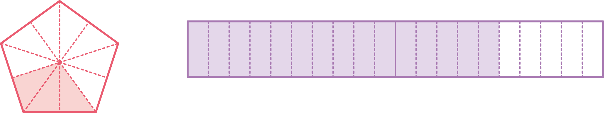
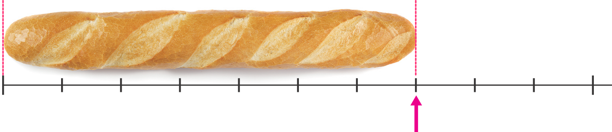

- 1
- 2
- 3
- 4
-
1 색칠한 부분의 크기를 소수로 나타내 보세요.
 0 1 20.31.5 -
2 빵의 길이는 몇 m인지 소수로 나타내 보세요.
 0 1 mm0.7 -
3 안에 알맞은 소수를 써넣으세요.
6 mm=cm0.64 cm 1 mm=cm4.1 -
3 안에 알맞은 수를 써넣고, 두 소수의 크기를 비교해 보세요.
6.5는 0.1이개이고, 6.8은 0.1이65개입니다.686.56.8